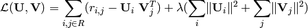

Overview¶
About PyRSVD¶
PyRSVD provides an efficient python implementation of a regularized singular value decomposition solver. The module is primarily aimed at applications in collaborative filtering, in particular the Netflix competition.
Matrix Approximation¶
The solver is used to compute a low-rank approximation of a rating matrix ‘’R’‘, which is usually a large partial matrix (i.e. lots of missing values).
More formally,

The goodness of the approximation is measured in terms of the frobenius norm with respect to the known ratings. Minimizing the frobenius norm between the rating matrix R and the factorization is equivalent to minimize the squared error with respect to the known ratings. Due to the huge number of parameters, overfitting is a serious problem. It is avoided by adding a regularization term to the squared error function, which penalizes large parameters. The regularized error function is given by,

The solver uses stochastic gradient decent to minimize the above error function.
Matrix approximation has been applied very successfully in collaborative filtering. The factors reveal some of the latent structure in the rating data which is subsequently used to predict user preferences. The factorization produced by the solver can directly be used to predict ratings or as a preprocessing step, e.g. to represent each user by a vector of latent factors he or she is interested in.
Future Plans¶
Among the varios refactorings I intend to extend the interface to allow both, uint8 and float ratings.
Footnotes
| [1] | For differences with Pyrex see . |